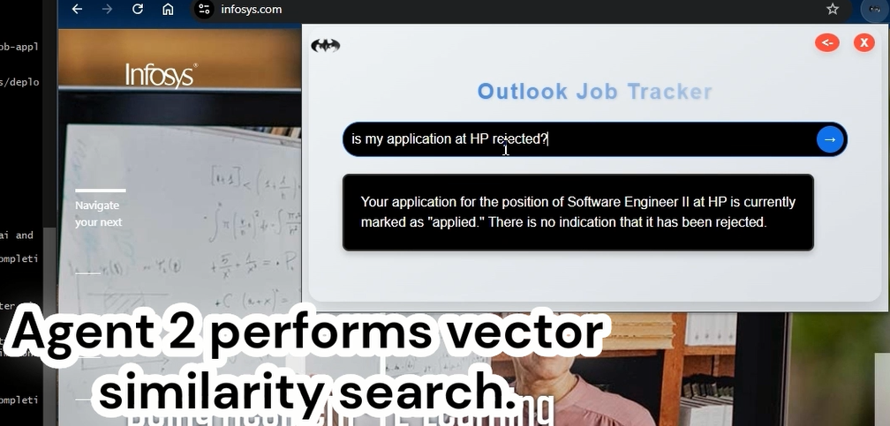
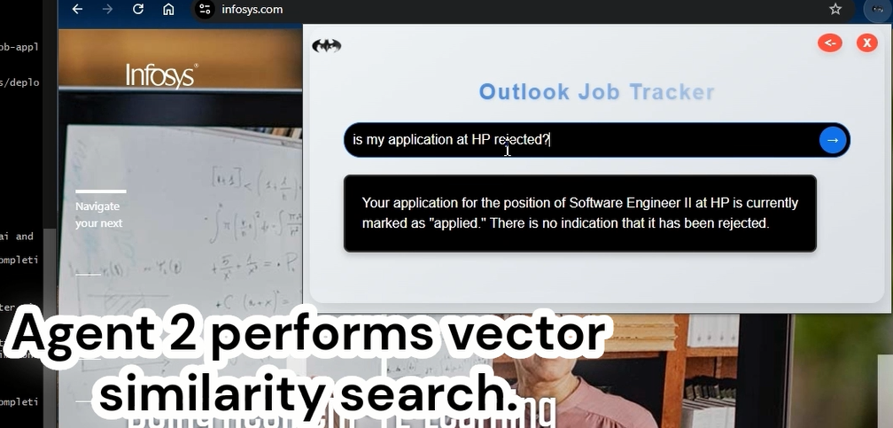
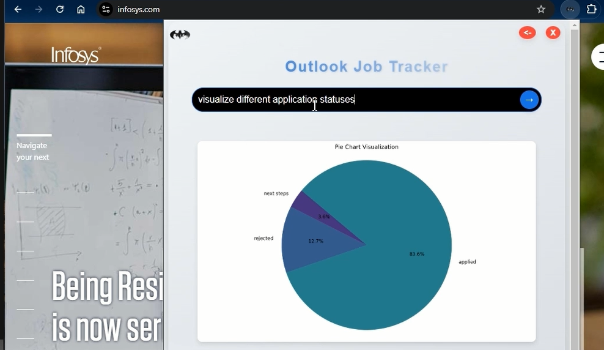
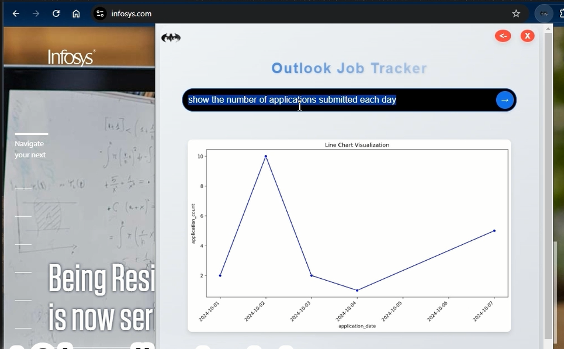
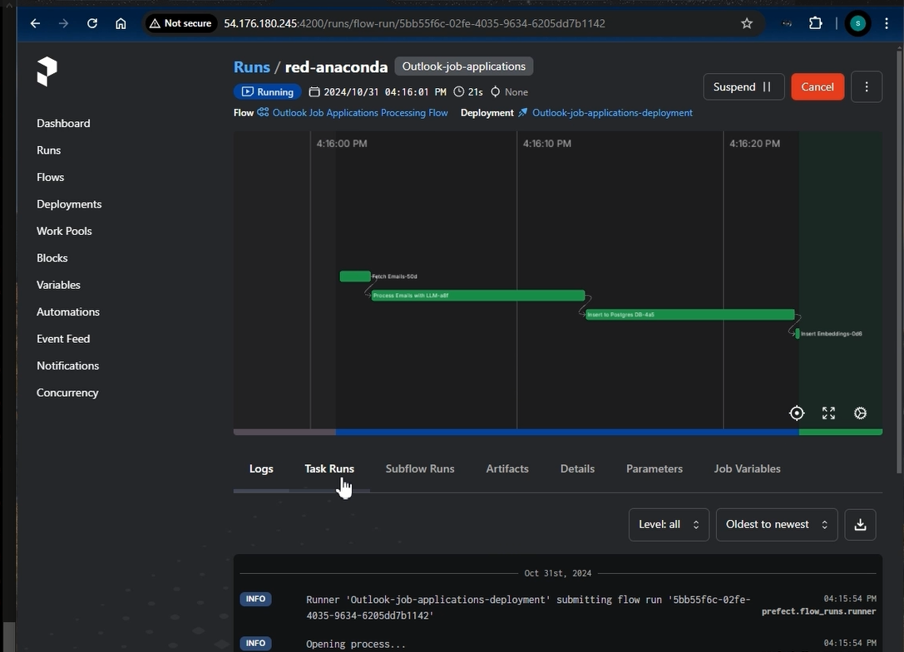
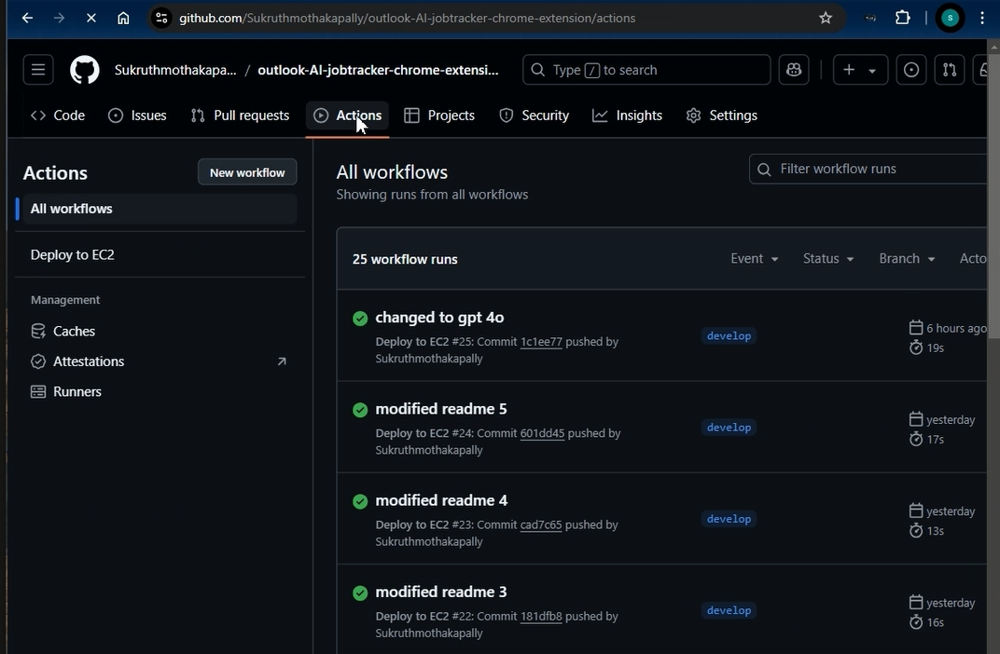
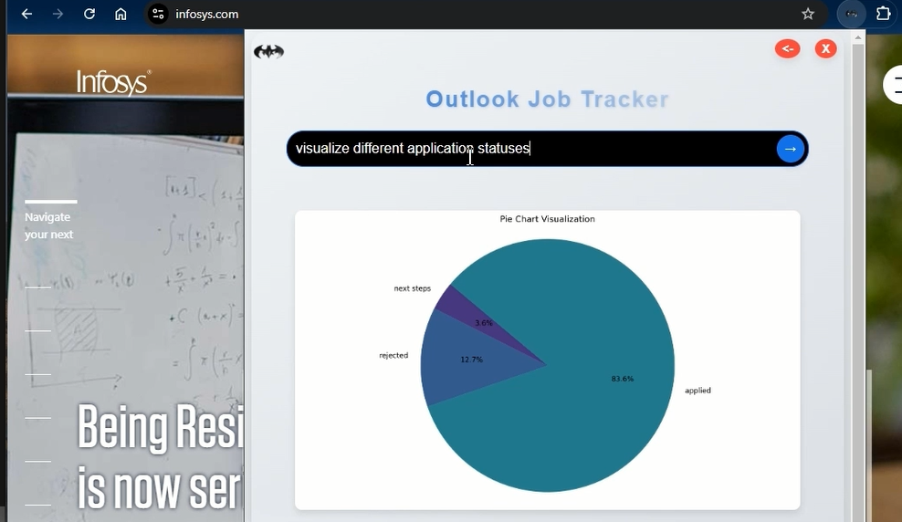
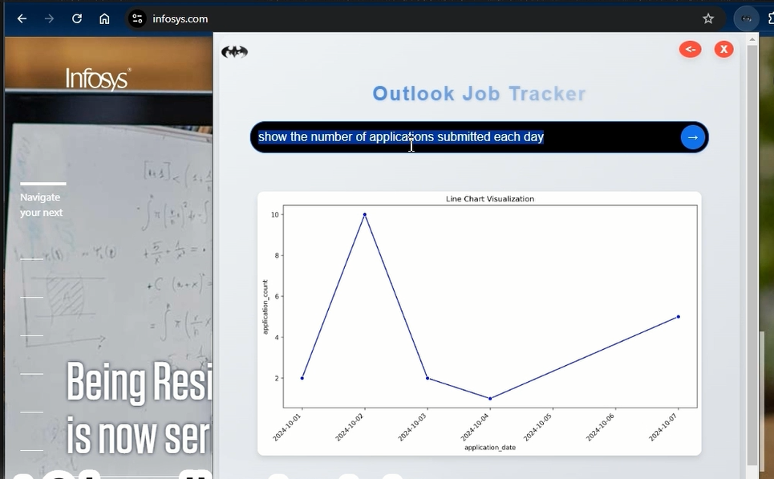
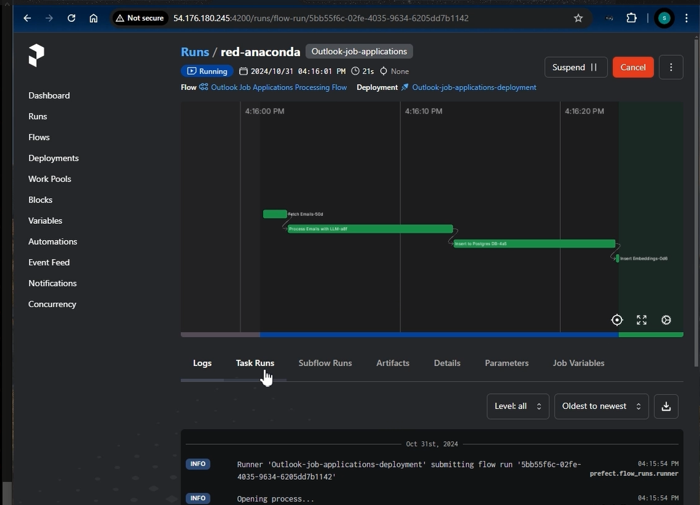
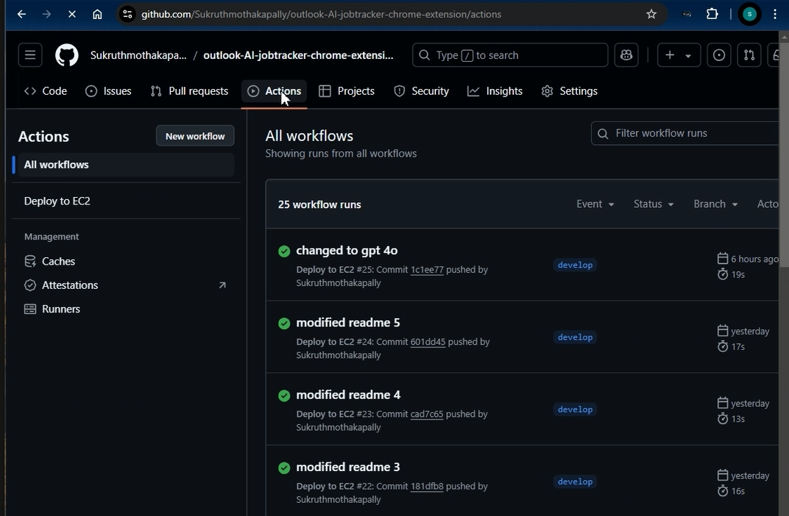

AI-Powered Outlook Job Tracker
The AI-Powered Outlook Job Tracker is a sophisticated Chrome extension integrated with a FastAPI backend that helps users track their job applications intelligently. It processes Outlook emails to maintain application records and provides real-time notifications when users visit companies they've previously applied to. The solution leverages advanced AI capabilities for natural language querying and data visualization.
Architecture
The system follows a microservices architecture with the following components:
- Chrome Extension (Frontend): Real-time company website detection, dynamic popup UI for application status display, natural language query interface, interactive data visualization dashboard.
- FastAPI Backend: RESTful API endpoints such as /check_url for company status verification and /get_user_query for AI-powered query processing, with a multi-agent AI system to classify, route, and handle queries efficiently.
- Automated Data Pipeline: 24-hour Prefect scheduler manages tasks such as Outlook email data extraction, preprocessing, AI-based processing, data ingestion into PostgreSQL, and vector embedding generation.
Features
- Intelligent Company Detection: Automatic detection of company websites and real-time notifications, along with a detailed history display of applications.
- AI-Powered Analytics: Offers natural language querying, company-specific insights, and statistical visualization powered by vector similarity for precise matching.
- Automated Data Management: Efficient email processing, intelligent data categorization, regular database updates, and vector embedding maintenance.

 

 







Tech Stack
Backend & AI
- Framework: FastAPI
- Language: Python
- Database: PostgreSQL with pgvector extension
- AI Model: OpenAI GPT-4
- Data Orchestration: Prefect
- Containerization: Docker & Docker Compose
Frontend
- Chrome Extension: JavaScript, HTML, CSS
- UI Components: Custom popup interface
Infrastructure & DevOps
- Cloud Platform: AWS (EC2, RDS)
- CI/CD: GitHub Actions
- Version Control: Git